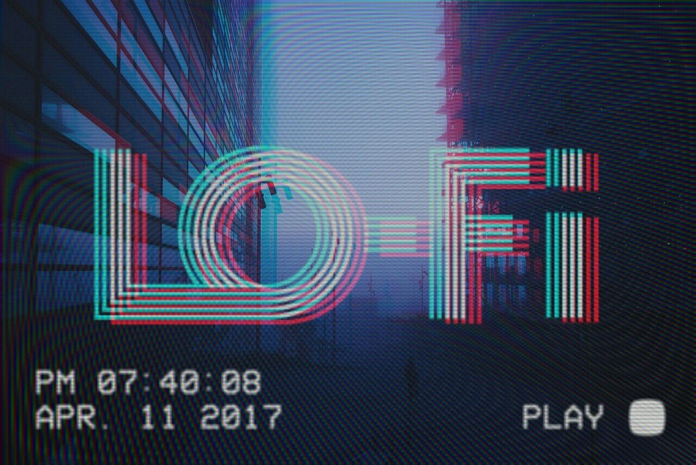

La cultura y estilo Sleazy, es una subcultura o movimiento Underground aparecido recientemente que tiene mucha relación con el Vaporwave, el cual hace referencia a los seguidores de este estilo musical y otros estilos, que incluso han emergido gracias al Vaporwave, a los seguidores de este movimiento a veces se les denomina Sleazys, Sleazies o Sleazers. Debido a la creciente popularidad del Vaporwave y sus subgeneros, han surgido bastantes creadores del mismo en toda la internet, a veces la calidad de sus creaciones no es muy elevada, incluso a veces por no decir pésima, confundiendo si era su intención hacer esa música o simplemente es que no tienen muchos conocimientos musicales y más bien tienen muy poca experiencia como compositores y creadores, ya que se basa prácticamente en samplear descaradamente de forma excesiva interminables estructuras musicales, y mezclarlas con otras tanto de música retro como de otros estilos, tales como el Lounge, o el Smouth Jazz, a esto sumar el ralentizar los BPM excesivamente hasta sonar la voz con un efecto excesiva y exageradamente extraño, con el fin de crear estructuras melódicas, relajadas y nostálgicas, y después añadir a estas estructuras musicales efectos musicales muy mal puestos, parecido al estilo musical que se escuchaba en los ascensores, pero que cuando se oyen las voces suenan excesivamente ralentizadas, también fusionado con otros estilos como el New Age, o más actuales como el Lounge, Smoouth Jazz, Chill Out o Chill Wave. Estas creaciones a veces suenan realmente muy mal y da a pensar que están realizados por gente inexperta, prácticamente son estructuras musicales sampleadas larguísimas a veces incluso un poco mal mezcladas y ralentizadas, a veces excesivamente ralentizadas, y que divulgan por la red en comunidades on-line como Turntable, Youtube o Soundcloud a veces incluso suenan tan ralentizadas que da a pensar que se trata de una broma.

La imagen asociada con Vaporwave incluye Glitch art, escultura clásica (especialmente la escultura helenística), diseños de páginas web de los 90, antiguas presentaciones de ordenador, estética cyberpunk,7 uso de caracteres japoneses y otra escritura no occidental. Los sistemas son también prominentes. Los componentes visuales de trabajos por John Foxx y otros músicos electrónicos de los años 80s son considerados influencias de la estética Vaporwave.